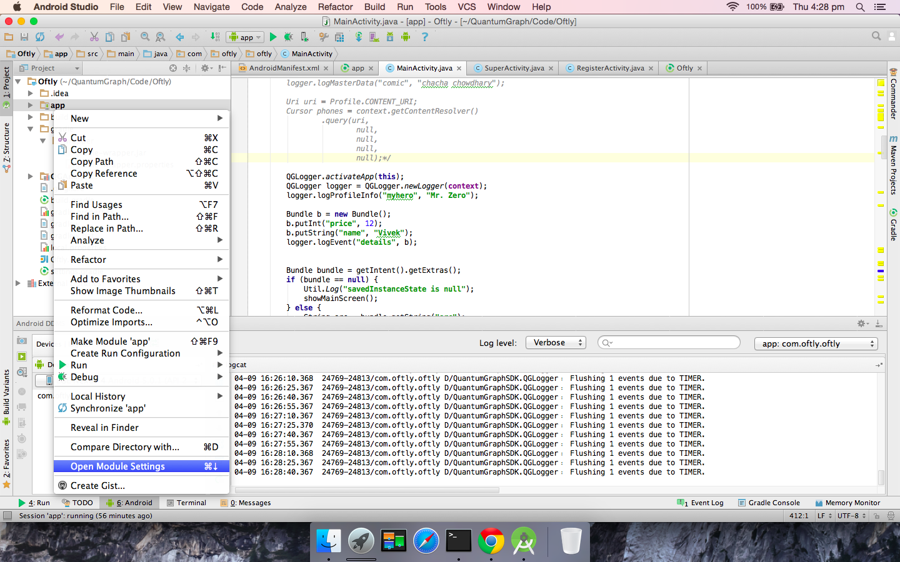

Integrating QuantumGraph SDK¶
Integration in Android Studio App¶
Unzip QGAnalyticsAndroidStudio.tar.gz at some location.
Import QGAnalytics project in Android Studio:
- Go to File -> Import Module
- Select the directory where you unzipped QGAnalyticsAndroidStudio.tar.gz
- Click “Finish”
Import QGAnalytics project in your app:
- In “Project” navigator, right click on “app”, like what is shown in image above.
- Select “Open Module Settings”
- Go to “Dependencies” tab
- Click “+” button, usually found at bottom
- Add QGAnalytics to your product
- Click “Apply” at the bottom.
Add following lines to AndroidManifest.xml:
<meta-data android:name="com.quantumgraph.sdk.ClientId" android:value="<your-client-id>"/> <meta-data android:name="com.quantumgraph.sdk.ApplicationId" android:value="<your-app-id>"/>
Integration in Eclipse App¶
1. Extract QGAnalytics.tar.gz¶
If you are on unix based system, you would do tar -xvf QGAnalytics.tar.gz. This creates a directory called QGAnalytics
2. Import project to eclipse¶
- Go to File->Import Select Android, and then “Existing Android code into workspace” Browse to directory QGAnalytics that you created in step (1)
- Go to properties -> Android In the lower section (Library), add these two libraries (a) google-play-services_lib (2) android-support-v7-appcompat. Eclipse will tell you if it can compile the library. If it is telling that it cannot, then we need to resolve the errors before moving forward to next step.
You may get an error like: “No resource found that matches the given name '@style/Theme.AppCompat.Light‘”
To solve this, you need to install appcompat library and then import it, as documented here: http://stackoverflow.com/questions/21059612/no-resource-found-that-matches-the-given-name-style-theme-appcompat-light
Now, eclipse knows about QGAnalytics. However, your project still does not know about it.
3. Add QGAnalytics as a library to your app¶
- Right click on project
- Go to “Properties”
- Go to “Android”
- Look the section called “Library” on the lower side. Click “Add” next to it and then choose QGAnalytics
Now your app partly knows about QGAnalytics. It’ll know it fully in a later step.
4. Get QGAnalytics on build path of your app¶
If you run your app now, it will crash. Logcat will show you the error similar to following: java.lang.ClassNotFoundException: Didn’t find class on path: dexpathlist
You add QGAnalytics on build path of your app (a) Right click on project (b) Go to “Properties” (c) Go to “Java Build Path” (d) Go to “Projects” tab. Click “Add” and then choose QGAnalytics (e) Now go to “Order and Export” tab within “Java Build Path” and make sure that QGAnalytics is selected
5. Modify the manifest file¶
Insert the lines provided in manifest.txt (a file provided to you) in between the <application>...</application> section of your manifest file.